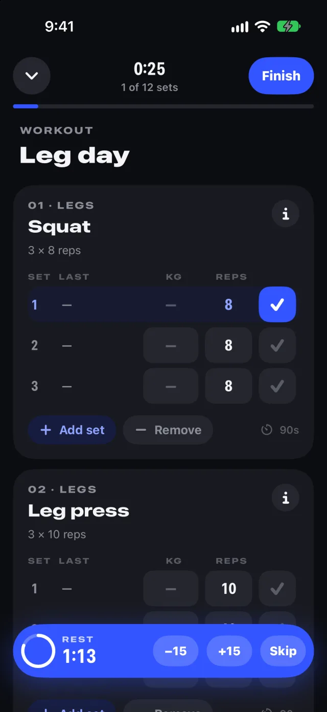

Today
The week at the top, with planned and trained days marked. Today's plan is one big card with a single Start button.
A workout tracker for iPhone. Plan your week, log each set in a tap, rest between them and see your progress. I designed it and rebuilt it natively in SwiftUI.



Everything is designed to be used between sets, with one hand and a raised heart rate.
The week at the top, with planned and trained days marked. Today's plan is one big card with a single Start button.
One row per set showing last time, weight and reps. Tap last time to copy it in. Ticking a set starts the rest timer.
Add or take off 15 seconds, or skip. If the phone is locked, a notification says when rest is up.
See the week at a glance, then edit days, exercises, sets, rep ranges and rest. Touch and hold a plan to start, duplicate or delete it.
The heaviest set for each exercise over time, workouts per week for eight weeks, and full history.
Changes back up automatically and merge if two phones were used. Finished workouts can be saved to Apple Health.
The rebuild removed gym check-ins, friends, step counts and manual backup buttons. What's left is planning, logging and progress.
A workout can be minimised while you use other tabs, Finish saves only ticked sets, and ending without saving can be undone.
Cobalt is Repway's only accent. Each of my apps owns one colour: emerald for Paidly, red for Nightfall, cobalt here.
Swift · SwiftUI · HealthKit · Supabase. Version 2.0 is in TestFlight; the Android version still uses the earlier React and Capacitor build.